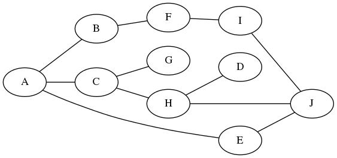
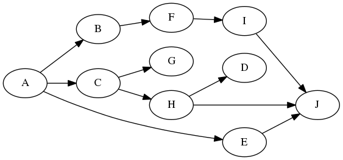
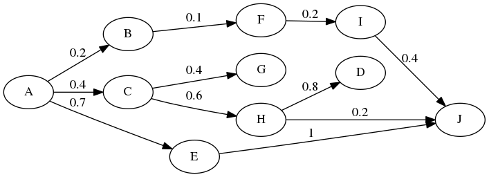

Outils de corpus
Corpus — 5
clement.plancq@ens.fr
Extraction d’information
Cyclone Idai, the storm that has killed hundreds of people, submerged homes and battered cities in southeastern Africa, may prove to be one of the worst weather-related disasters ever in the Southern Hemisphere, a United Nations official said on Tuesday.
Extraction d’information
- Analyse de watson:
- subject: Cyclon Idai, the storm
- action: that has killed
- object: hundred of people
- Voir aussi nlp4climate, travail de Pablo Ruiz Fabo
Extraction d’information
Comment faire pour extraire ce type d’information ?
- Identification des groupes et des fonctions syntaxiques -> parseurs syntaxiques
- Extraction des infos (sujet, prédicat, objet)
- langage de requête
- script adhoc
Exploiter les annotations en dépendance
| linguiste | fichier | repr. informatique | implémentation |
|---|---|---|---|
| schéma | .conll |
? | ? |
Exploiter les annotations en dépendance
Exploiter les annotations en dépendance
# sent_id = annodis.er_00461
# text = Le conseil municipal donne son accord pour cette procédure.
1 Le le DET _ Definite=Def|Gender=Masc|Number=Sing|PronType=Art 2 det _ _
2 conseil conseil NOUN _ Gender=Masc|Number=Sing 4 nsubj _ _
3 municipal municipal ADJ _ Gender=Masc|Number=Sing 2 amod _ _
4 donne donner VERB _ Mood=Ind|Number=Sing|Person=3|Tense=Pres|VerbForm=Fin 0 root _ _
5 son son DET _ Number=Sing|Poss=Yes 6 det _ _
6 accord accord NOUN _ Gender=Masc|Number=Sing 4 obj _ _
7 pour pour ADP _ _ 9 case _ _
8 cette ce DET _ Gender=Fem|Number=Sing|PronType=Dem 9 det _ _
9 procédure procédure NOUN _ Gender=Fem|Number=Sing 4 obl:mod _ SpaceAfter=No
10 . . PUNCT _ _ 4 punct _ _Exploiter les annotations en dépendance
| linguiste | fichier | repr. informatique | implémentation |
|---|---|---|---|
| schéma | .conll |
graphe | ? |
Graphe
- Les arbres de dépendance sont le plus souvent représentés par des graphes
- Les graphes sont des modèles abstraits de réseaux : ensemble de sommets (ou nœuds) et de relations entre les sommets appelées arêtes
- La théorie des graphes trouve son origine dans le problème des sept ponts de Königsberg
- À la frontière entre les mathématiques et l’informatique, les graphes sont très utilisés (plans de métros, maillage d’utilisateurs sur un réseau social, réseau électrique, …)
Graphe

- des sommets (ou nœuds)
- des arêtes
Graphe dirigé

Graphe pondéré

Plus court chemin
- Le « problème du plus court chemin » est un grand classique de l’algorithmique (voir algorithme de Dijkstra)
- Il est à l’œuvre dans beaucoup d’applications avec géolocalisation
Plus court chemin


Exploiter les annotations en dépendance
| linguiste | fichier | repr. informatique | implémentation |
|---|---|---|---|
| schéma | .conll |
graphe | dict |
Graphe : implémentation en Python
Graphe : implémentation en Python
def add_node(graph, node):
if node not in graph:
graph[node] = []
def add_edge(graph, edge):
node1, node2 = tuple(edge)
if node1 in graph:
graph[node1].append(node2)
else:
graph[node1] = [node2]
def get_nodes(graph):
return list(graph.keys())Écrivez la fonction get_edges(graph)
source : doc grew
source : doc grew
g = dict()
g['W1'] = ({form: 'Le', upos: 'DET'}, [])
g['W2'] = ({form: 'conseil', upos: 'NOUN'}, [])
g['W3'] = ({form: 'municipal', upos: 'ADJ'}, [])
g['W4'] = ({form: 'donne', upos: 'VERB'}, [('nsubj', 'W2'), ('obj', 'W6')])
g['W5'] = ({form: 'son', upos: 'DET'}, [])
g['W6'] = ({form: 'accord', upos: 'NOUN'}, [('det', 'W5')])
g['W2'][1].append(('det', 'W1'), ('amod', 'W3'))La bibliothèque Grew permet d’utiliser la syntaxe suivante :
g = grew.graph('''graph {
W1 [form = "Le", lemma = "le", upos = DET];
W2 [form = "conseil", lemma = "conseil", upos = NOUN];
W3 [form = "municipal", lemma = "municipal", upos = ADJ];
W4 [form = "donne", lemma = "donner", upos = VERB];
W5 [form = "son", lemma = "son", upos = DET];
W6 [form = "accord", lemma = "accord", upos = NOUN];
W2 -[det]->W1;
W2 -[amod]->W3;
W4 -[nsubj]->W2;
W4 -[obj]->W6;
W6 -[det]->W5;
}''')Et de définir des patrons de recherche comme :
- Repérer les triplets sujet, verbe, objet dans le corpus French-Sequoia
- Pour le langage de requête voir le tutorial sur Grew-math
Grew
- Peut s’utiliser :
- en ligne de commande sur des fichiers au format CoNLL-U
- via la lib python
- Grew est un outil de réécriture de graphes (Graph rewriting for NLP), la recherche de patrons n’en est qu’une sous-partie
Spacy
Spacy
- Pour chaque
tokenon peut accéder à:- sa tête
token.head - le label de la relation
token.dep_ - les tokens régis
token.children(seulement à gauchetoken.lefts, à droitetoken.rights, la séquence complètetoken.subtree) - la chaîne de recteurs
token.ancestors
- sa tête
Spacy
Extraire de la phrase « Le conseil municipal donne son accord pour cette procédure. » le triplet sujet, verbe, objet.